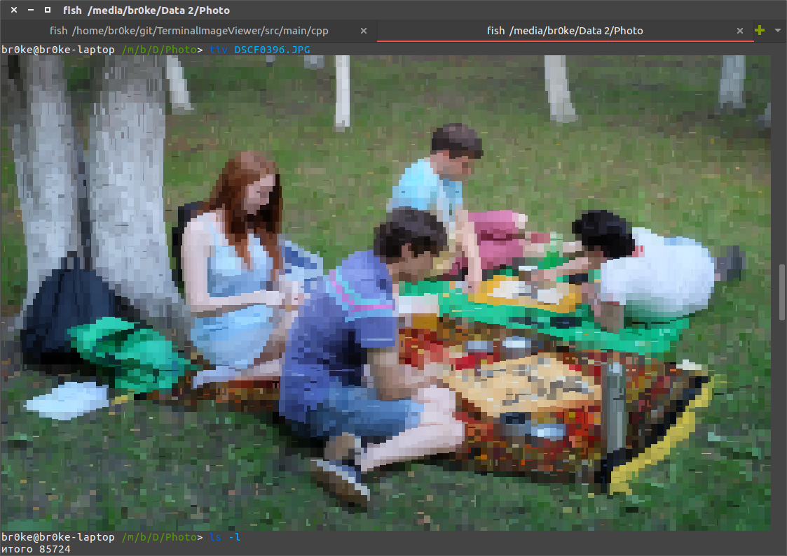

В Ubuntu стандартным просмотрщиком изображений является eog:
eog pic.png
С установленным ImageMagick можно использовать команду display:
display path/to/picture.png
Также можно использовать feh (поддерживается сразу несколько изображений):
feh pic1.png pic2.png pic3.png
Для машин, где невозможно отобразить изображение, но есть подключение к сети, можно использовать следующий метод. Запускаем веб-сервер и смотрим картинки через браузер с другой машины:
python -m SimpleHTTPServer 8080
либо для Python3:
python3 -m http.server 8080
Если очень хочется просмотреть изображение прямо в терминале, то есть отличная программа TerminalImageViewer, которая отрисует картинку символами. Будет очень похоже.
sudo apt install imagemagick || yum install imagemagick
git clone https://github.com/stefanhaustein/TerminalImageViewer.git
cd TerminalImageViewer/src/main/cpp
make
sudo make install
